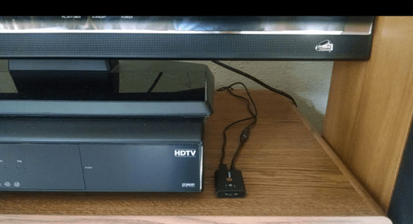

ALWAYS ON
Bluetooth Transmitter (including TT-BA01,TT-BA07/TT-BA08/TT-BA09 in TX mode) support stay on when it is charged. When you keep the transmitter charged by a 5V external charger such as Android power charger (instead of the USB jack of TV) via Micro USB Power Cord, then you turn on the last paired Bluetooth headphones or speakers, they would automatically pair with Bluetooth transmitters!

NOTE:
- 1. TT-BA06 can't support stay on while keep charging.
- 2. Bluetooth Receiver (including TT-BA07/TT-BA08/TT-BA09 in RX mode) does not support stay on or re-connect feature, it will auto power-off while there is no any paired device.